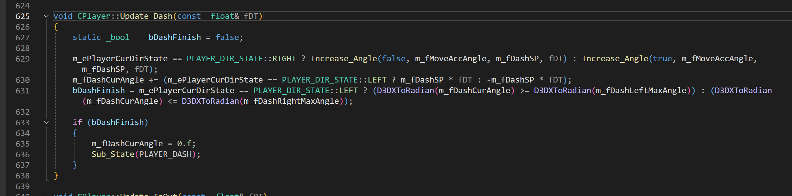
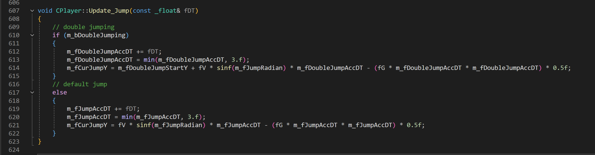
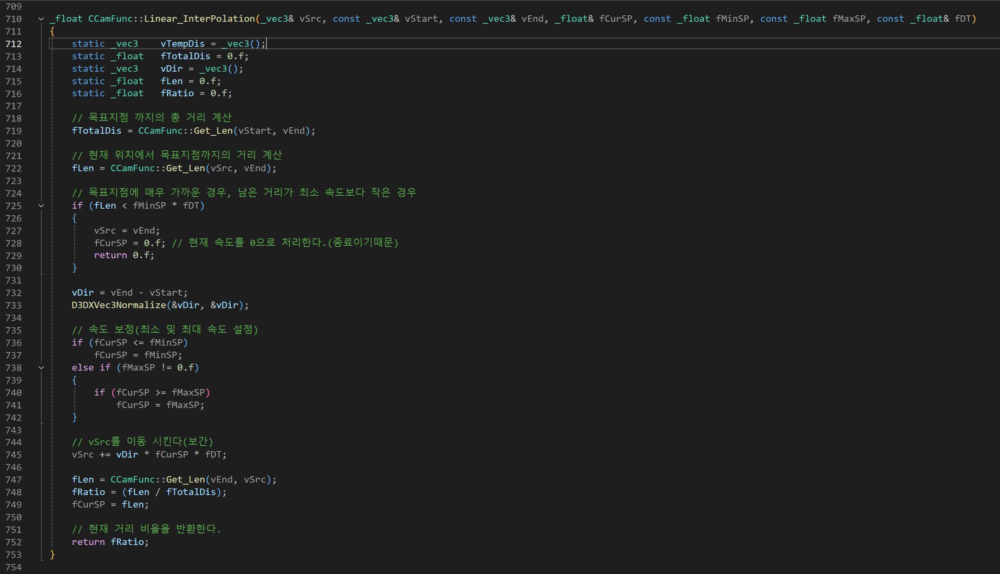
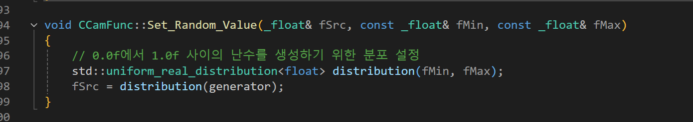
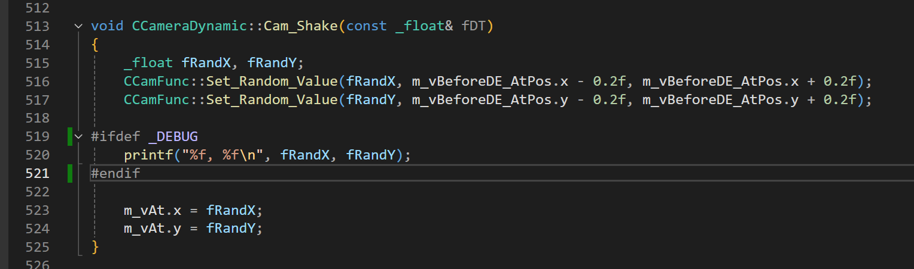

Orbital Bullet 모작 (2.5D)
깃허브 링크: https://github.com/starkshn/Orbiral-
영상 링크

제작자 : 김남영(플레이어, 카메라), 김민용(맵툴, 이펙트, 아이템), 조민호(몬스터, UI), 이진우(보스)
제작 년도 : 2024.08.09~2024.09.06
제작 기간 : 3주
소스 코드 : https://github.com/starkshn/Orbiral-
담당 업무
- 플레이어 이동, 상태, 텍스쳐 애니매이션 제어 구현
- 카메라 이동 및 관련 구현
- 플레이어 리소스 및 사운드 편집 및 구현
플레이어 이동 및 상태 제어
구현 과정
플레이어의 상태는 비트 연산자를 활용하여 제어하였습니다.
중첩 상태를 관리하기에 비트 연산을 통해 관리하는 것이 효율적이라 판단하여 해당 방법을 선택하여 애니매이션 제어도 함께 수행하였습니다.
중심점을 기준으로 빙글빙글 도는 식의 게임플레이 방식이라 플레이어의 부모 행렬을 스테이지의 중심으로 잡고 행렬 연산을 수행하였습니다.
Code

- Code
📝 Code
// player state
private:
void Add_State(const _uint& iState)
{
m_iPlayerState |= iState;
}
void Sub_State(const _uint& iState)
{
m_iPlayerState &= ~iState;
}
void Sub_All_State() { m_iPlayerState &= 0; }상태 추가, 삭제 비트연산을 함수화 한 코드

- 전체 Code
📝 Code
void CPlayer::KeyInput_Dash()
{
if (Check_State(PLAYER_INOUT) || Check_State(PLAYER_TRANSPORT_UPPER_LEVEL)) return;
if (Engine::Key_Down(VK_LSHIFT))
{
if ((m_iPlayerState & Get_State_Sum(PLAYER_DASH, PLAYER_TRANSPORT_UPPER_LEVEL, PLAYER_FIRE, PLAYER_DEAD)))
return;
if (Check_State(PLAYER_JUMP))
{
if (Check_State(PLAYER_MOVE))
Sub_State(PLAYER_MOVE);
}
else
{
if (Check_State(PLAYER_MOVE))
Sub_State(PLAYER_MOVE);
}
Change_Player_Anim_State(PLAYER_ANIM_STATE::DASH);
Add_State(PLAYER_DASH);
}
}대쉬 스킬을 쓸 때 최대 회전 값만큼 회전할 수 있게하는 코드

- Code
📝 Code
void CPlayer::KeyInput_Jump()
{
if (Check_State(PLAYER_INOUT) || Check_State(PLAYER_TRANSPORT_UPPER_LEVEL)) return;
if (Engine::Key_Down(VK_SPACE))
{
if (!(m_iPlayerState & Get_State_Sum(PLAYER_DASH, PLAYER_TRANSPORT_UPPER_LEVEL, PLAYER_DEAD)))
{
// default jump
if (!m_bJumping)
{
m_bJumping = true;
m_bDoubleJumping = false;
Sub_All_State();
Add_State(PLAYER_JUMP);
Change_Player_Anim_State(PLAYER_ANIM_STATE::JUMP);
}
// double jump
else if (Check_State(PLAYER_JUMP) && m_bJumping && !m_bDoubleJumping)
{
m_fDoubleJumpStartY = m_fCurJumpY;
m_bDoubleJumping = true;
Change_Player_Anim_State(PLAYER_ANIM_STATE::JUMP);
}
}
}
}일반 점프, 안쪽과 바깥쪽을 왔다갔다하는 점프를 하는 경우 포물선 방정식을 활용하여 점프할 수 있도록 구현한 코드
카메라 이동 및 관련 기능 구현
구현 과정
플레이어가 안쪽, 바깥쪽으로 이동하는 경우 스테이지의 중심점으로 부터 반지름의 길이 자체를 선형보간하여 줄이거나 늘려 보다 부드럽게 줌인 줌아웃되는 듯하게 구현하였습니다.
플레이어 피격시나 보스 스테이지 입장시 카메라의 At의 위치를 미세하게 매틱 변경하영 카메라 Shaking효과를 구현하였습니다.
Code

- Code
📝 Code
_float CCamFunc::Linear_InterPolation(_vec3& vSrc, const _vec3& vStart, const _vec3& vEnd, _float& fCurSP, const _float fMinSP, const _float fMaxSP, const _float& fDT)
{
static _vec3 vTempDis = _vec3();
static _float fTotalDis = 0.f;
static _vec3 vDir = _vec3();
static _float fLen = 0.f;
static _float fRatio = 0.f;
// 목표지점 까지의 총 거리 계산
fTotalDis = CCamFunc::Get_Len(vStart, vEnd);
// 현재 위치에서 목표지점까지의 거리 계산
fLen = CCamFunc::Get_Len(vSrc, vEnd);
// 목표지점에 매우 가까운 경우, 남은 거리가 최소 속도보다 작은 경우
if (fLen < fMinSP * fDT)
{
vSrc = vEnd;
fCurSP = 0.f; // 현재 속도를 0으로 처리한다.(종료이기때문)
return 0.f;
}
vDir = vEnd - vStart;
D3DXVec3Normalize(&vDir, &vDir);
// 속도 보정(최소 및 최대 속도 설정)
if (fCurSP <= fMinSP)
fCurSP = fMinSP;
else if (fMaxSP != 0.f)
{
if (fCurSP >= fMaxSP)
fCurSP = fMaxSP;
}
// vSrc를 이동 시킨다(보간)
vSrc += vDir * fCurSP * fDT;
fLen = CCamFunc::Get_Len(vEnd, vSrc);
fRatio = (fLen / fTotalDis);
fCurSP = fLen;
// 현재 거리 비율을 반환한다.
return fRatio;
}카메라가 목적지 까지의 이동을 선형보간으로 이동하는 코드


- Code
📝 Code
void CCameraDynamic::Cam_Shake(const _float& fDT)
{
_float fRandX, fRandY;
CCamFunc::Set_Random_Value(fRandX, m_vBeforeDE_AtPos.x - 0.2f, m_vBeforeDE_AtPos.x + 0.2f);
CCamFunc::Set_Random_Value(fRandY, m_vBeforeDE_AtPos.y - 0.2f, m_vBeforeDE_AtPos.y + 0.2f);
printf("%f, %f\n", fRandX, fRandY);
m_vAt.x = fRandX;
m_vAt.y = fRandY;
}
void CCamFunc::Set_Random_Value(_float& fSrc, const _float& fMin, const _float& fMax)
{
// 0.0f에서 1.0f 사이의 난수를 생성하기 위한 분포 설정
std::uniform_real_distribution<float> distribution(fMin, fMax);
fSrc = distribution(generator);
}카메라가 흔들리게 하는 코드
카메라의 At의 x, y 의 값을 작은 랜덤한 값을 설정하여 덜덜 떨리도록 하였습니다.
프로젝트를 통해 배운점
- 좌표계 변환과 행렬에 대한 학습
이번 프로젝트에서 가장 많이 배운 점 중 하나는 좌표계 변환과 행렬에 대한 이해입니다. 게임이 특정 위치를 중심으로 반지름만큼 떨어진 상태에서 원형 궤도를 도는 형태로 진행되었기 때문에, 개발 초기에는 원방정식이나 원주율을 사용한 방식 등을 고민했습니다. 하지만 최종적으로는 특정한 점을 부모 좌표계로 설정하고, 이 좌표계로부터 일정 거리(반지름)만큼 떨어진 위치에 객체를 배치하는 방식을 채택했습니다. 이로 인해 월드 좌표계와 부모 좌표계 간의 변환을 효율적으로 관리할 수 있었습니다.
- 3차원 공간에서의 좌표계 변환
3차원 공간에서의 변환도 큰 학습 포인트였습니다. 게임 내에서 엘리베이터나 에스컬레이터를 통해 다른 원기둥으로 이동하는 상황에서는, 부모 좌표계를 이동시킴으로써 플레이어가 자연스럽게 해당 부모 좌표계와 함께 이동할 수 있도록 구현했습니다. 이러한 방식은 여러 오브젝트가 부모와 자식 관계로 연결된 상태에서 자연스러운 이동과 회전을 가능하게 했으며, 행렬 연산을 통한 변환의 중요성을 깨닫게 해주었습니다.
- 중첩 상태 관리 및 비트 연산 활용
또 다른 배움은 중첩 상태 관리에 관한 것이었습니다. 프로젝트 중 객체의 다양한 상태를 관리하는 과정에서 enum 값만을 사용한 방식은 예외 처리가 너무 복잡해지는 문제를 초래했습니다. 이러한 문제를 해결하기 위해 상태 관리를 비트 연산으로 처리하는 방식을 도입했으며, 이를 통해 여러 상태를 동시에 처리하고 관리할 수 있게 되었습니다. 비트 플래그를 사용한 방식이 복잡한 상태 관리에서 더 유리하다는 점을 배울 수 있었습니다.
- 3차원 공간에서의 월드 좌표와 로컬 좌표의 변환
부모 좌표계를 중심으로 자식 오브젝트가 회전하거나 이동하는 경우, 월드 좌표와 로컬 좌표 간의 변환이 중요했습니다. 이 과정에서 회전 행렬, 이동 행렬 등의 3차원 행렬 변환 방식을 활용하여 자식 오브젝트가 부모 오브젝트의 위치와 방향에 따라 자연스럽게 움직일 수 있도록 구현했습니다. 이를 통해 좌표 변환에 대한 깊이 있는 이해를 얻을 수 있었습니다.
프로젝트 후기
이번 팀 프로젝트는 DirectX를 활용한 첫 팀플레이였기에, 개발 초기에는 3차원 공간에 대한 이해가 부족했습니다. 하지만 팀원들과 함께 서로 가르쳐주고 공부하며 지식을 쌓아가는 과정이 가장 기억에 남습니다.
처음에는 부모 좌표계가 이동하면 자식의 좌표도 일정 거리를 유지하며 함께 이동하는 개념이 이해하기 어려웠고, 렌더링 파이프라인을 통해 실제 화면에 렌더링되는 과정도 복잡하게 느껴졌습니다. 하지만 매일 연필로 수식을 하나하나 써가며 팀원들과 함께 학습한 덕분에, 점차 이해할 수 있었습니다.
물론 3차원 변환과 렌더링 파이프라인을 이해하는 것도 중요한 배움이었지만, 무엇보다 팀원들과의 의사소통, 서로 알려주며 함께 성장한 경험이 더 소중한 기억으로 남는 프로젝트였습니다.